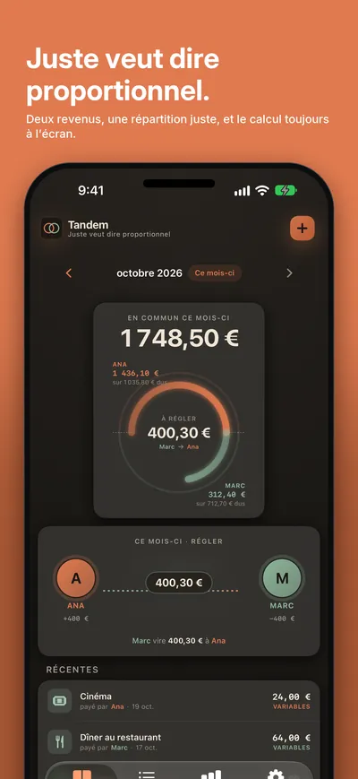
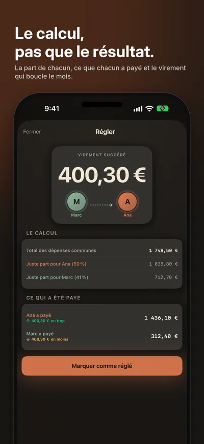
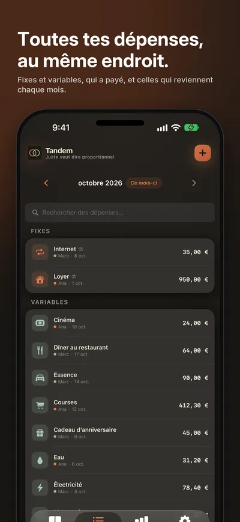
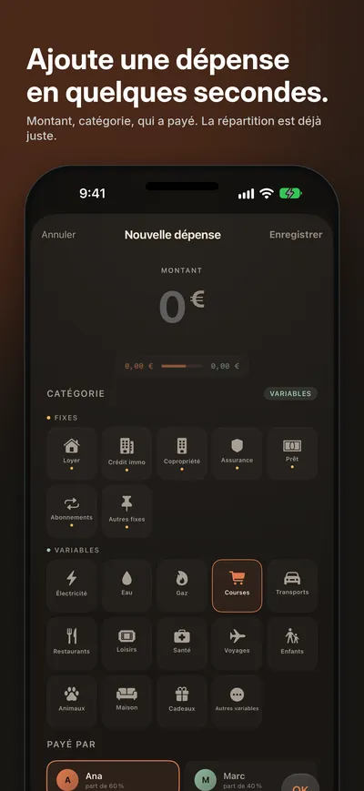
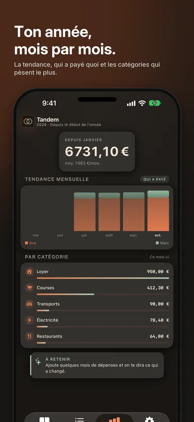
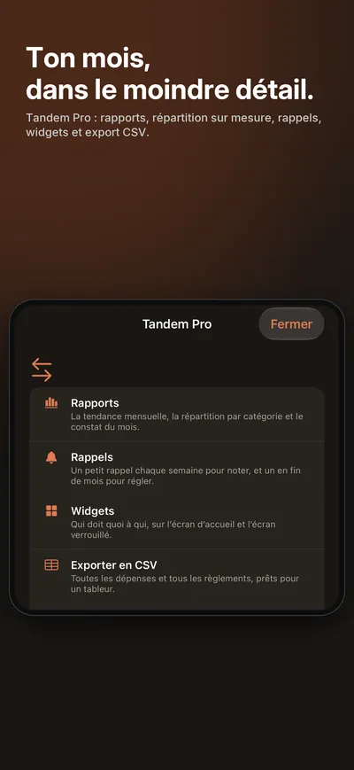
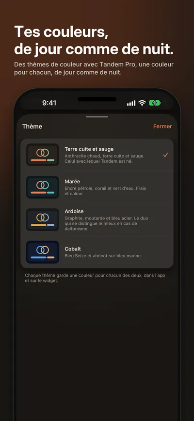

Seize Apps · iOS
Tandem
Moitié-moitié n’est juste que si vous gagnez la même chose. Tandem prend les deux revenus et chaque dépense commune — le loyer, les courses, le dîner au restaurant — et la répartit en proportion, pour que le mois se termine par un seul virement que vous comprenez tous les deux. Un seul téléphone tient les comptes du couple.







Ce qu’elle fait
Une seule chose, bien faite.
- 01 / RÉPARTIR
Proportionnel par défaut
Saisis les deux revenus une fois. Chaque dépense est répartie selon cette proportion — ou à 50/50, ou payée en entier par l’un de vous, ou, avec Tandem Pro, selon la part dont vous convenez — et la proportion est figée avec la dépense : une augmentation l’an prochain ne rouvre jamais les mois de l’année d’avant.
- 02 / RÉGLER
Un chiffre par mois
Qui a payé quoi, qui doit quoi à qui, et le virement qui remet tout d’équerre. Marque le mois comme réglé. Trop rapide ? Tu peux annuler.
- 03 / VOIR
Où part l’argent
Des dépenses récurrentes qui se notent toutes seules. Tandem Pro ajoute des rapports par catégorie et par mois, des rappels pour noter et pour régler, des widgets, l’export CSV et des thèmes de couleur : un achat unique, avec un essai gratuit de 30 jours.
Confidentialité
À toi, pas à nous.
Tandem garde les noms, les revenus et les dépenses sur ton appareil et dans ton propre compte iCloud. Rien n’est partagé avec personne : ni avec nous, ni avec un serveur.
Une app de Seize Apps.